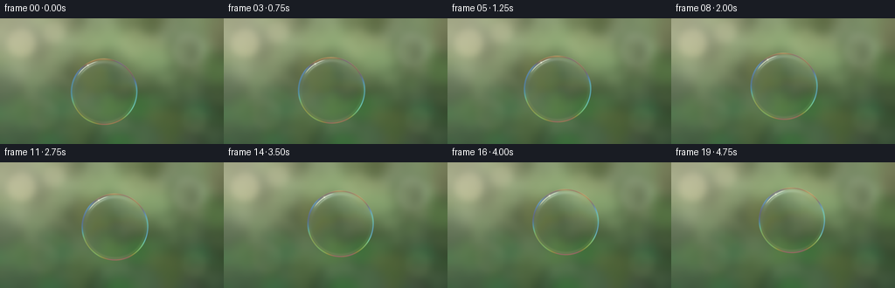
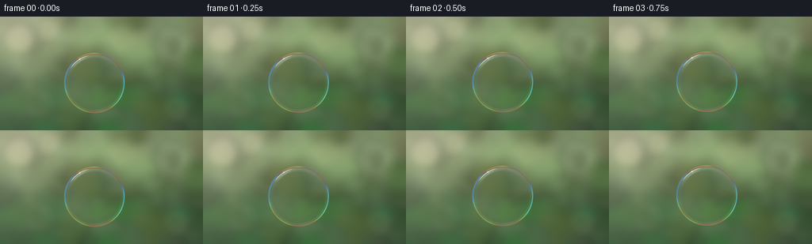
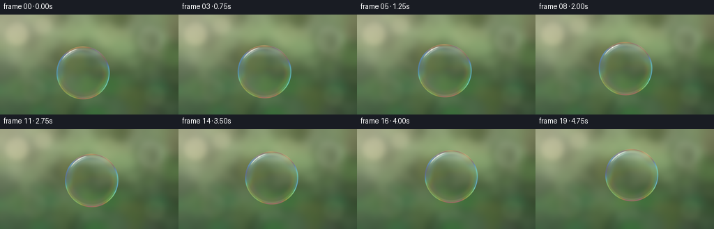
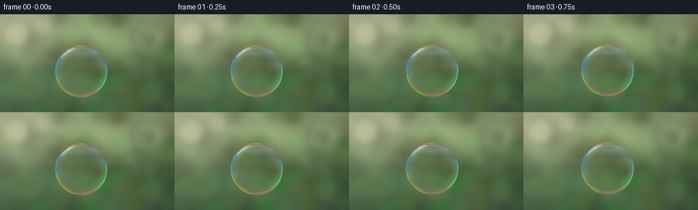
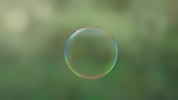

CODING AGENTS AS PIXEL WORLD MODELS
traex/GPT-6.1-Sol · phygen_082
点击播放 · 原生 RGB 像素
逐轮保存的候选
回放视频、检查图与代码变化。
每份候选均可单独播放。实际图片检查记录在下方工具轨迹中。
候选 01播放与检查图
点击播放 · 原生 RGB 像素


展开代码变化
--- 上一保存版本
+++ 本次保存版本
@@ -0,0 +1,134 @@
+from pathlib import Path
+import json
+import numpy as np
+from PIL import Image, ImageDraw, ImageFilter
+from artifact_io import save
+
+ROOT = Path(__file__).resolve().parent
+spec = json.loads((ROOT / 'task_spec.json').read_text())
+W, H, N = spec['width'], spec['height'], spec['frames']
+S = 3
+w, h = W*S, H*S
+rng = np.random.default_rng(82413)
+Y, X = np.mgrid[0:h, 0:w].astype(np.float64)
+x, y = X/S, Y/S
+
+def smooth_noise(nx, ny, blur=0):
+ a = rng.random((ny,nx))*255
+ im = Image.fromarray(a.astype(np.uint8)).resize((w,h),Image.Resampling.BICUBIC)
+ if blur:
+ im = im.filter(ImageFilter.GaussianBlur(blur*S))
+ return np.asarray(im).astype(float)/255
+
+# A distant garden, photographed well outside the depth of field.
+n1 = smooth_noise(9,6,7)
+n2 = smooth_noise(24,15,4)
+n3 = smooth_noise(5,4,12)
+base = np.zeros((h,w,3),float)
+top = np.clip(1-y/160,0,1)
+base[:,:,0] = 42 + 58*top + 42*n1 + 14*n2
+base[:,:,1] = 68 + 47*top + 55*n1 + 12*n2
+base[:,:,2] = 43 + 27*top + 42*n1 + 12*n2
+# Patches of sky showing between the trees, and creamy out-of-focus leaves.
+layer = Image.new('RGBA',(w,h),(0,0,0,0))
+d = ImageDraw.Draw(layer)
+for i in range(100):
+ px = rng.uniform(-25,280)*S
+ py = rng.uniform(-25,160)*S
+ r = rng.uniform(6,23)*S
+ aspect = rng.uniform(.65,1.3)
+ if py/S < 72 and rng.random()<.65:
+ color=(int(rng.uniform(181,240)),int(rng.uniform(195,239)),int(rng.uniform(151,208)),int(rng.uniform(30,105)))
+ else:
+ color=(int(rng.uniform(32,93)),int(rng.uniform(65,125)),int(rng.uniform(31,73)),int(rng.uniform(40,145)))
+ d.ellipse((px-r,py-r*aspect,px+r,py+r*aspect),fill=color)
+layer=layer.filter(ImageFilter.GaussianBlur(7*S))
+a=np.asarray(layer).astype(float)/255
+base=base*(1-a[:,:,3,None])+a[:,:,:3]*255*a[:,:,3,None]
+# A few large luminous, soft-edged lens bokeh patches, not competing with the subject.
+for bx,by,br,power,col in [(24,28,16,.40,[255,245,191]),(62,16,12,.22,[246,241,196]),(216,36,19,.20,[220,231,207]),(222,117,14,.13,[213,218,146]),(49,110,17,.11,[210,219,157])]:
+ dist=np.sqrt((x-bx)**2+(y-by)**2)
+ soft=1/(1+np.exp(np.clip((dist-br)/2.7,-50,50)))
+ base=base*(1-soft[:,:,None]*power)+np.array(col)*soft[:,:,None]*power
+sun=np.exp(-((x+5)**2/(2*67**2)+(y+10)**2/(2*62**2)))
+base=base*(1-.58*sun[:,:,None])+np.array([255,247,216])*.58*sun[:,:,None]
+# Gentle photographic vignette.
+vig=1-.10*((x-W/2)**2/(W/2)**2+(y-H/2)**2/(H/2)**2)
+base*=np.clip(vig,.80,1)[:,:,None]
+
+# Bilinear background sampling for a very slight transmitted-image displacement.
+def sample_bg(xx,yy):
+ xx=np.clip(xx*S,0,w-1.001); yy=np.clip(yy*S,0,h-1.001)
+ ix=xx.astype(int); iy=yy.astype(int)
+ fx=(xx-ix)[:,:,None]; fy=(yy-iy)[:,:,None]
+ return (base[iy,ix]*(1-fx)*(1-fy)+base[iy,ix+1]*fx*(1-fy)+base[iy+1,ix]*(1-fx)*fy+base[iy+1,ix+1]*fx*fy)
+
+def wrap(a):
+ return np.arctan2(np.sin(a),np.cos(a))
+
+frames=[]
+for k in range(N):
+ t=k/spec['fps']
+ cx=119+4.3*t+1.5*np.sin(t*1.0)
+ cy=84-3.55*t+1.4*np.sin(t*1.2)
+ radius=38.3+.35*np.sin(t*.9)
+ # Only imperceptible surface wobble: surface tension holds it nearly spherical.
+ rx=radius*(1+.004*np.sin(t*1.6))
+ ry=radius*(1-.004*np.sin(t*1.6))
+ u=(x-cx)/rx; v=(y-cy)/ry
+ rr=np.sqrt(u*u+v*v)
+ z=np.sqrt(np.maximum(0,1-rr*rr))
+ theta=np.arctan2(v,u)
+ inside=(rr<1).astype(float)
+ coverage=np.clip((1-rr)*radius*S+.5,0,1)
+ # Sun-lit, hollow water film: background passes almost unchanged through the centre.
+ displacement=.28*(rr**3)
+ transmitted=sample_bg(x+u*displacement,y+v*displacement)
+ # Thin film optical path varies with slow draining and circulation of the liquid.
+ thickness=385+145*v+32*np.sin(6*v+2*u+.22*t)+20*np.sin(10*rr+3*theta-.20*t)*(rr**2)+12*np.sin(11*u-4*v+.35*t)
+ cos_t=np.sqrt(1-(1-z*z)/(1.333**2))
+ wave=np.array([650.,530.,455.])
+ phase=4*np.pi*1.333*thickness[:,:,None]*cos_t[:,:,None]/wave
+ interference=.14+.86*(.5-.5*np.cos(phase))
+ fresnel=.023+.977*(1-z)**4.5
+ reflection_strength=(.025+.78*fresnel)[:,:,None]*interference
+ # Sphere reflection of the luminous canopy and sky; shaded green bottom.
+ sky=np.clip(.5-.75*v,0,1)
+ env=np.array([89,120,93])[None,None,:]*(1-sky[:,:,None])+np.array([230,241,255])[None,None,:]*sky[:,:,None]
+ # faint dark tree silhouettes visible in curved reflection close to the rim
+ env*= (1-.25*(.5+.5*np.sin(theta*8+.3*np.sin(theta*13)))*rr**8)[:,:,None]
+ bubble=transmitted*(1-reflection_strength)+env*reflection_strength
+ # Colored reflected arcs accumulate towards the grazing edges, remaining clear inside.
+ edge=np.exp(-((rr-.975)/.018)**2)
+ inner=np.exp(-((rr-.921)/.035)**2)
+ rainbow=.16+.84*interference
+ edge_bright=rainbow*np.array([244,252,255])
+ bubble=bubble*(1-.47*edge[:,:,None]) + edge_bright*.47*edge[:,:,None]
+ lower=np.clip((v+.2)/1.2,0,1)
+ bubble += 21*inner[:,:,None]*rainbow*lower[:,:,None]
+ # Broad, subtly rainbow pearlescent crescent on upper hemisphere.
+ top_arc=np.exp(-((rr-.89)/.048)**2)*np.exp(-(wrap(theta+1.92)/.70)**2)
+ bubble += top_arc[:,:,None]*np.array([22,24,31])
+ # The reflection of the sun is a curved white highlight on the upper-left surface.
+ highlight=np.exp(-((rr-.926)/.011)**2)*np.exp(-(wrap(theta+2.18)/.36)**6)
+ bubble=bubble*(1-.82*highlight[:,:,None])+np.array([255,254,244])*.82*highlight[:,:,None]
+ # A softer neighboring reflected strip and a little cool counter-reflection.
+ soft=np.exp(-((rr-.868)/.022)**2)*np.exp(-(wrap(theta+2.20)/.29)**4)
+ bubble += soft[:,:,None]*np.array([23,23,21])
+ rim2=np.exp(-((rr-.976)/.009)**2)*np.exp(-(wrap(theta-.40)/.38)**2)
+ bubble += rim2[:,:,None]*np.array([42,48,54])
+ image=base*(1-coverage[:,:,None])+bubble*coverage[:,:,None]
+ # Tiny brilliant sunlight glint, with a modest photographic bloom.
+ ang=-2.12
+ gx=cx+rx*.929*np.cos(ang); gy=cy+ry*.929*np.sin(ang)
+ dd=(x-gx)**2+(y-gy)**2
+ bloom=np.exp(-dd/(2*1.45**2))*.14
+ sharp=np.exp(-dd/(2*.48**2))*.91
+ glint=np.clip(bloom+sharp,0,.96)
+ image=image*(1-glint[:,:,None])+np.array([255,253,234])*glint[:,:,None]
+ # Fine fixed sensor texture, reduced by downsampling.
+ image=np.clip(image,0,255).astype(np.uint8)
+ im=Image.fromarray(image).resize((W,H),Image.Resampling.LANCZOS)
+ frames.append(np.asarray(im))
+save(np.stack(frames).astype(np.uint8),ROOT)
+print('Saved',len(frames),'RGB frames and video player.')
候选 02播放与检查图
点击播放 · 原生 RGB 像素


展开代码变化
--- 上一保存版本
+++ 本次保存版本
@@ -105,12 +105,21 @@
edge_bright=rainbow*np.array([244,252,255])
bubble=bubble*(1-.47*edge[:,:,None]) + edge_bright*.47*edge[:,:,None]
lower=np.clip((v+.2)/1.2,0,1)
- bubble += 21*inner[:,:,None]*rainbow*lower[:,:,None]
+ bubble += 34*inner[:,:,None]*rainbow*lower[:,:,None]
+ # Broader, softly feathered interference bands make the translucent liquid
+ # film visible without turning the bubble into an opaque colored ball.
+ film_band=(.13*np.exp(-((rr-.84)/.115)**2)+.10*np.exp(-((rr-.956)/.037)**2))
+ film_band *= (.55+.45*np.cos(theta-.55)**2)
+ film_col=72+183*interference
+ bubble=bubble*(1-film_band[:,:,None])+film_col*film_band[:,:,None]
+ # A curved sky reflection on the upper cap, fading into the clear centre.
+ cap=np.exp(-((v+.71+.14*u*u)/.15)**2)*np.exp(-(u/.80)**6)*.115
+ bubble=bubble*(1-cap[:,:,None])+np.array([233,245,255])*cap[:,:,None]
# Broad, subtly rainbow pearlescent crescent on upper hemisphere.
top_arc=np.exp(-((rr-.89)/.048)**2)*np.exp(-(wrap(theta+1.92)/.70)**2)
bubble += top_arc[:,:,None]*np.array([22,24,31])
# The reflection of the sun is a curved white highlight on the upper-left surface.
- highlight=np.exp(-((rr-.926)/.011)**2)*np.exp(-(wrap(theta+2.18)/.36)**6)
+ highlight=np.exp(-((rr-.926)/.017)**2)*np.exp(-(wrap(theta+2.18)/.36)**6)
bubble=bubble*(1-.82*highlight[:,:,None])+np.array([255,254,244])*.82*highlight[:,:,None]
# A softer neighboring reflected strip and a little cool counter-reflection.
soft=np.exp(-((rr-.868)/.022)**2)*np.exp(-(wrap(theta+2.20)/.29)**4)
可观测工具轨迹
实际执行的命令与返回图片。
命令 1exit 0
/bin/bash -lc "ls -la && cat prompt.txt && printf '\\n---RULES---\\n' && cat GENERATION_RULES.md && printf '\\n---SPEC---\\n' && cat task_spec.json"
命令 2exit 0
/bin/bash -lc "cat artifact_io.py && python - <<'PY'
import numpy, PIL
print('numpy', numpy.__version__)
PY"命令 3exit 0
/bin/bash -lc "cat > generate.py <<'PY'
from pathlib import Path
import json
import numpy as np
from PIL import Image, ImageDraw, ImageFilter
from artifact_io import save
ROOT = Path(__file__).resolve().parent
spec = json.loads((ROOT / 'task_spec.json').read_text())
W, H, N = spec['width'], spec['height'], spec['frames']
S = 3
w, h = W*S, H*S
rng = np.random.default_rng(82413)
Y, X = np.mgrid[0:h, 0:w].astype(np.float64)
x, y = X/S, Y/S
def smooth_noise(nx, ny, blur=0):
a = rng.random((ny,nx))*255
im = Image.fromarray(a.astype(np.uint8)).resize((w,h),Image.Resampling.BICUBIC)
if blur:
im = im.filter(ImageFilter.GaussianBlur(blur*S))
return np.asarray(im).astype(float)/255
# A distant garden, photographed well outside the depth of field.
n1 = smooth_noise(9,6,7)
n2 = smooth_noise(24,15,4)
n3 = smooth_noise(5,4,12)
base = np.zeros((h,w,3),float)
top = np.clip(1-y/160,0,1)
base[:,:,0] = 42 + 58*top + 42*n1 + 14*n2
base[:,:,1] = 68 + 47*top + 55*n1 + 12*n2
base[:,:,2] = 43 + 27*top + 42*n1 + 12*n2
# Patches of sky showing between the trees, and creamy out-of-focus leaves.
layer = Image.new('RGBA',(w,h),(0,0,0,0))
d = ImageDraw.Draw(layer)
for i in range(100):
px = rng.uniform(-25,280)*S
py = rng.uniform(-25,160)*S
r = rng.uniform(6,23)*S
aspect = rng.uniform(.65,1.3)
if py/S < 72 and rng.random()<.65:
color=(int(rng.uniform(181,240)),int(rng.uniform(195,239)),int(rng.uniform(151,208)),int(rng.uniform(30,105)))
else:
color=(int(rng.uniform(32,93)),int(rng.uniform(65,125)),int(rng.uniform(31,73)),int(rng.uniform(40,145)))
d.ellipse((px-r,py-r*aspect,px+r,py+r*aspect),fill=color)
layer=layer.filter(ImageFilter.GaussianBlur(7*S))
a=np.asarray(layer).astype(float)/255
base=base*(1-a[:,:,3,None])+a[:,:,:3]*255*a[:,:,3,None]
# A few large luminous, soft-edged lens bokeh patches, not competing with the subject.
for bx,by,br,power,col in [(24,28,16,.40,[255,245,191]),(62,16,12,.22,[246,241,196]),(216,36,19,.20,[220,231,207]),(222,117,14,.13,[213,218,146]),(49,110,17,.11,[210,219,157])]:
dist=np.sqrt((x-bx)**2+(y-by)**2)
soft=1/(1+np.exp(np.clip((dist-br)/2.7,-50,50)))
base=base*(1-soft[:,:,None]*power)+np.array(col)*soft[:,:,None]*power
sun=np.exp(-((x+5)**2/(2*67**2)+(y+10)**2/(2*62**2)))
base=base*(1-.58*sun[:,:,None])+np.array([255,247,216])*.58*sun[:,:,None]
# Gentle photographic vignette.
vig=1-.10*((x-W/2)**2/(W/2)**2+(y-H/2)**2/(H/2)**2)
base*=np.clip(vig,.80,1)[:,:,None]
# Bilinear background sampling for a very slight transmitted-image displacement.
def sample_bg(xx,yy):
xx=np.clip(xx*S,0,w-1.001); yy=np.clip(yy*S,0,h-1.001)
ix=xx.astype(int); iy=yy.astype(int)
fx=(xx-ix)[:,:,None]; fy=(yy-iy)[:,:,None]
return (base[iy,ix]*(1-fx)*(1-fy)+base[iy,ix+1]*fx*(1-fy)+base[iy+1,ix]*(1-fx)*fy+base[iy+1,ix+1]*fx*fy)
def wrap(a):
return np.arctan2(np.sin(a),np.cos(a))
frames=[]
for k in range(N):
t=k/spec['fps']
cx=119+4.3*t+1.5*np.sin(t*1.0)
cy=84-3.55*t+1.4*np.sin(t*1.2)
radius=38.3+.35*np.sin(t*.9)
# Only imperceptible surface wobble: surface tension holds it nearly spherical.
rx=radius*(1+.004*np.sin(t*1.6))
ry=radius*(1-.004*np.sin(t*1.6))
u=(x-cx)/rx; v=(y-cy)/ry
rr=np.sqrt(u*u+v*v)
z=np.sqrt(np.maximum(0,1-rr*rr))
theta=np.arctan2(v,u)
inside=(rr<1).astype(float)
coverage=np.clip((1-rr)*radius*S+.5,0,1)
# Sun-lit, hollow water film: background passes almost unchanged through the centre.
displacement=.28*(rr**3)
transmitted=sample_bg(x+u*displacement,y+v*displacement)
# Thin film optical path varies with slow draining and circulation of the liquid.
thickness=385+145*v+32*np.sin(6*v+2*u+.22*t)+20*np.sin(10*rr+3*theta-.20*t)*(rr**2)+12*np.sin(11*u-4*v+.35*t)
cos_t=np.sqrt(1-(1-z*z)/(1.333**2))
wave=np.array([650.,530.,455.])
phase=4*np.pi*1.333*thickness[:,:,None]*cos_t[:,:,None]/wave
interference=.14+.86*(.5-.5*np.cos(phase))
fresnel=.023+.977*(1-z)**4.5
reflection_strength=(.025+.78*fresnel)[:,:,None]*interference
# Sphere reflection of the luminous canopy and sky; shaded green bottom.
sky=np.clip(.5-.75*v,0,1)
env=np.array([89,120,93])[None,None,:]*(1-sky[:,:,None])+np.array([230,241,255])[None,None,:]*sky[:,:,None]
# faint dark tree silhouettes visible in curved reflection close to the rim
env*= (1-.25*(.5+.5*np.sin(theta*8+.3*np.sin(theta*13)))*rr**8)[:,:,None]
bubble=transmitted*(1-reflection_strength)+env*reflection_strength
# Colored reflected arcs accumulate towards the grazing edges, remaining clear inside.
edge=np.exp(-((rr-.975)/.018)**2)
inner=np.exp(-((rr-.921)/.035)**2)
rainbow=.16+.84*interference
edge_bright=rainbow*np.array([244,252,255])
bubble=bubble*(1-.47*edge[:,:,None]) + edge_bright*.47*edge[:,:,None]
lower=np.clip((v+.2)/1.2,0,1)
bubble += 21*inner[:,:,None]*rainbow*lower[:,:,None]
# Broad, subtly rainbow pearlescent crescent on upper hemisphere.
top_arc=np.exp(-((rr-.89)/.048)**2)*np.exp(-(wrap(theta+1.92)/.70)**2)
bubble += top_arc[:,:,None]*np.array([22,24,31])
# The reflection of the sun is a curved white highlight on the upper-left surface.
highlight=np.exp(-((rr-.926)/.011)**2)*np.exp(-(wrap(theta+2.18)/.36)**6)
bubble=bubble*(1-.82*highlight[:,:,None])+np.array([255,254,244])*.82*highlight[:,:,None]
# A softer neighboring reflected strip and a little cool counter-reflection.
soft=np.exp(-((rr-.868)/.022)**2)*np.exp(-(wrap(theta+2.20)/.29)**4)
bubble += soft[:,:,None]*np.array([23,23,21])
rim2=np.exp(-((rr-.976)/.009)**2)*np.exp(-(wrap(theta-.40)/.38)**2)
bubble += rim2[:,:,None]*np.array([42,48,54])
image=base*(1-coverage[:,:,None])+bubble*coverage[:,:,None]
# Tiny brilliant sunlight glint, with a modest photographic bloom.
ang=-2.12
gx=cx+rx*.929*np.cos(ang); gy=cy+ry*.929*np.sin(ang)
dd=(x-gx)**2+(y-gy)**2
bloom=np.exp(-dd/(2*1.45**2))*.14
sharp=np.exp(-dd/(2*.48**2))*.91
glint=np.clip(bloom+sharp,0,.96)
image=image*(1-glint[:,:,None])+np.array([255,253,234])*glint[:,:,None]
# Fine fixed sensor texture, reduced by downsampling.
image=np.clip(image,0,255).astype(np.uint8)
im=Image.fromarray(image).resize((W,H),Image.Resampling.LANCZOS)
frames.append(np.asarray(im))
save(np.stack(frames).astype(np.uint8),ROOT)
print('Saved',len(frames),'RGB frames and video player.')
PY
python generate.py"命令 4exit 0
/bin/bash -lc "python - <<'PY'
p='generate.py'
s=open(p).read()
s=s.replace(' # Broad, subtly rainbow pearlescent crescent on upper hemisphere.',''' # Broader, softly feathered interference bands make the translucent liquid
# film visible without turning the bubble into an opaque colored ball.
film_band=(.13*np.exp(-((rr-.84)/.115)**2)+.10*np.exp(-((rr-.956)/.037)**2))
film_band *= (.55+.45*np.cos(theta-.55)**2)
film_col=72+183*interference
bubble=bubble*(1-film_band[:,:,None])+film_col*film_band[:,:,None]
# A curved sky reflection on the upper cap, fading into the clear centre.
cap=np.exp(-((v+.71+.14*u*u)/.15)**2)*np.exp(-(u/.80)**6)*.115
bubble=bubble*(1-cap[:,:,None])+np.array([233,245,255])*cap[:,:,None]
# Broad, subtly rainbow pearlescent crescent on upper hemisphere.''')
s=s.replace('((rr-.926)/.011)', '((rr-.926)/.017)')
s=s.replace('21*inner', '34*inner')
open(p,'w').write(s)
PY
python generate.py"命令 5exit 1
/bin/bash -lc 'command -v ffmpeg && ls -lh pixels.npz index.html frames/19.png'
视觉工具实际返回图片 1

视觉工具实际返回图片 2

保存候选 2 份；完成命令 5 次；可验证图片返回 2 张。原始 API 响应与完整日志保留在本地。